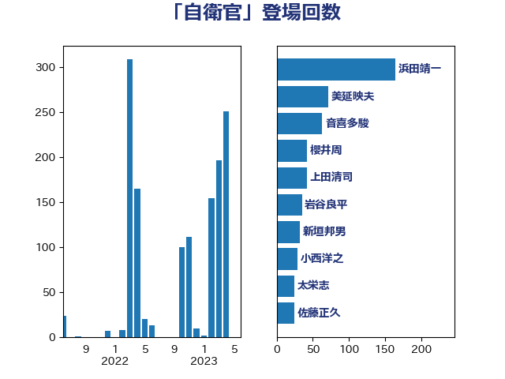

単語「自衛官」

| 浜田靖一 | 自由民主党 | 164 回 |
| 美延映夫 | 日本維新の会 | 71 回 |
| 音喜多駿 | 日本維新の会 | 63 回 |
| 櫻井周 | 立憲民主党 | 42 回 |
| 上田清司 | 国民民主党 | 42 回 |
| 岩谷良平 | 日本維新の会 | 35 回 |
| 新垣邦男 | 立憲民主党 | 32 回 |
| 小西洋之 | 立憲民主党 | 29 回 |
| 太栄志 | 立憲民主党 | 25 回 |
| 佐藤正久 | 自由民主党 | 24 回 |
| 源馬謙太郎 | 立憲民主党 | 23 回 |
| 井野俊郎 | 自由民主党 | 20 回 |
| 伊藤俊輔 | 立憲民主党 | 17 回 |
| 斎藤アレックス | 国民民主党 | 16 回 |
| 野田佳彦 | 立憲民主党 | 15 回 |
| 鈴木敦 | 国民民主党 | 14 回 |
| 羽田次郎 | 立憲民主党 | 13 回 |
| 榛葉賀津也 | 国民民主党 | 13 回 |
| 鬼木誠 | 立憲民主党 | 12 回 |
| 松川るい | 自由民主党 | 11 回 |
| 斎藤洋明 | 自由民主党 | 11 回 |
| 岸田文雄 | 自由民主党 | 11 回 |
| 小森卓郎 | 自由民主党 | 11 回 |
| 馬淵澄夫 | 立憲民主党 | 10 回 |
| 石井苗子 | 日本維新の会 | 9 回 |
| 山添拓 | 日本共産党 | 9 回 |
| 篠原豪 | 立憲民主党 | 8 回 |
| 石破茂 | 自由民主党 | 8 回 |
| 玉木雄一郎 | 国民民主党 | 8 回 |
| 杉本和巳 | 日本維新の会 | 8 回 |
| 木村次郎 | 自由民主党 | 8 回 |
| 山岸一生 | 立憲民主党 | 8 回 |
| 和田政宗 | 自由民主党 | 8 回 |
| 細野豪志 | 自由民主党 | 7 回 |
| 星北斗 | 自由民主党 | 7 回 |
| 平木大作 | 公明党 | 7 回 |
| 宮本岳志 | 日本共産党 | 7 回 |
| 三浦信祐 | 公明党 | 7 回 |
| 金子道仁 | 日本維新の会 | 6 回 |
| 阿達雅志 | 自由民主党 | 5 回 |
| 有村治子 | 自由民主党 | 5 回 |
| 馬場成志 | 自由民主党 | 4 回 |
| 階猛 | 立憲民主党 | 4 回 |
| 若林洋平 | 自由民主党 | 4 回 |
| 早稲田ゆき | 立憲民主党 | 4 回 |
| 島尻安伊子 | 自由民主党 | 4 回 |
| 堀井巌 | 自由民主党 | 4 回 |
| 住吉寛紀 | 日本維新の会 | 4 回 |
| 三木圭恵 | 日本維新の会 | 4 回 |
| 三上えり | 立憲民主党 | 4 回 |
| 馬場伸幸 | 日本維新の会 | 3 回 |
| 足立康史 | 日本維新の会 | 3 回 |
| 芳賀道也 | 国民民主党 | 3 回 |
| 緒方林太郎 | 無所属 | 3 回 |
| 岩本剛人 | 自由民主党 | 3 回 |
| 小沢雅仁 | 立憲民主党 | 3 回 |
| 和田有一朗 | 日本維新の会 | 3 回 |
| 赤嶺政賢 | 日本共産党 | 2 回 |
| 福山哲郎 | 立憲民主党 | 2 回 |
| 石川大我 | 立憲民主党 | 2 回 |
| 田島麻衣子 | 立憲民主党 | 2 回 |
| 片山さつき | 自由民主党 | 2 回 |
| 松野博一 | 自由民主党 | 2 回 |
| 松本尚 | 自由民主党 | 2 回 |
| 徳永久志 | 立憲民主党 | 2 回 |
| 大塚拓 | 自由民主党 | 2 回 |
| 國場幸之助 | 自由民主党 | 2 回 |
| 吉田宣弘 | 公明党 | 2 回 |
| 加藤勝信 | 自由民主党 | 2 回 |
| 鰐淵洋子 | 公明党 | 1 回 |
| 高良鉄美 | 無所属 | 1 回 |
| 青山大人 | 立憲民主党 | 1 回 |
| 長妻昭 | 立憲民主党 | 1 回 |
| 重徳和彦 | 立憲民主党 | 1 回 |
| 道下大樹 | 立憲民主党 | 1 回 |
| 赤澤亮正 | 自由民主党 | 1 回 |
| 赤池誠章 | 自由民主党 | 1 回 |
| 藤田文武 | 日本維新の会 | 1 回 |
| 福重隆浩 | 公明党 | 1 回 |
| 石川博崇 | 公明党 | 1 回 |
| 石井啓一 | 公明党 | 1 回 |
| 牧野たかお | 自由民主党 | 1 回 |
| 浅川義治 | 日本維新の会 | 1 回 |
| 浅尾慶一郎 | 自由民主党 | 1 回 |
| 津島淳 | 自由民主党 | 1 回 |
| 池畑浩太朗 | 日本維新の会 | 1 回 |
| 水野素子 | 立憲民主党 | 1 回 |
| 林芳正 | 自由民主党 | 1 回 |
| 杉尾秀哉 | 立憲民主党 | 1 回 |
| 本村伸子 | 日本共産党 | 1 回 |
| 山谷えり子 | 自由民主党 | 1 回 |
| 山田美樹 | 自由民主党 | 1 回 |
| 小野泰輔 | 日本維新の会 | 1 回 |
| 小田原潔 | 自由民主党 | 1 回 |
| 小泉進次郎 | 自由民主党 | 1 回 |
| 八木哲也 | 自由民主党 | 1 回 |
| 井上哲士 | 日本共産党 | 1 回 |